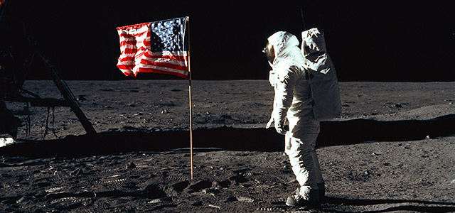

La tecnología necesaria para la exploración espacial estuvo disponible con la construcción de los primeros cohetes. Permiten poner en órbita satélites artificiales para estudio tanto de la Tierra como del espacio exterior. También permiten el envío de astronautas al espacio exterior.
Desde que los antiguos chinos inventaron la pólvora, se hacen experimentos con cohetes, pero fueron Pedro Paulet (Perú), Robert Hutchings Goddard (EE.UU.), Konstantin Tsiolkovsky (Rusia) y Hermann Oberth (Alemania) los pioneros en la concepción de cohetes. Estos científicos hicieron que la ciencia astronáutica diese sus primeros pasos. Pedro Paulet diseñó y construyó el primer motor cohete en 1897. El motor pesaba 2,5 kilogramos, tenía un empuje de 200 libras, experimentaba 300 explosiones por minuto y estaba impulsado por combustible de propelente líquido; un componente formado por peróxido de nitrógeno y gasolina. En 1902 Konstantin Tsiolkovsky diseñó una nave a retropropulsión para viajes interplanetarios guiándose en los diseños y el prototipo denominado Autobólido que en 1895 había diseñado Pedro Paulet Mostajo
Asimismo en 1912, el profesor estadounidense Robert Goddard y el científico alemán Hermann Julius Oberth (en 1923) perfeccionaron sus motores experimentales basándose en la concepción inicial de Paulet. Goddard fue más lejos y construyó diversos cohetes pequeños. Se especializó en concebir y construir cohetes impulsados por combustible líquido. Varios de sus proyectos presentaban conceptos que hasta hoy son usados en los modernos cohetes, como por ejemplo la estabilización del vuelo con el uso de giroscopios.
De forma independiente, en la Alemania nazi, los ingenieros alemanes desarrollaban un proyecto que resultaría en el misil V-2 (técnicamente más bien descrita como misil). Las V-2 estaban impulsadas por alcohol (una mezcla del 75% de alcohol etílico y un 25% de agua) y oxígeno líquido. Los motores generaban un máximo de 72 574 kgf (160 000 lbf) de empuje, desarrollando una velocidad de 1.341 m/s, con un radio de alcance de 321 a 362 km. Fueron usadas para bombardear París y Londres en 1944. El proyecto de los modernos cohetes le debe mucho a estos precursores.
El principio de funcionamiento del motor del cohete se basa en la tercera ley de Newton, la ley de la acción y reacción, que dice que "a toda acción le corresponde una reacción, con la misma intensidad, misma dirección y sentido contrarios". Así, el cohete se desplazará hacia arriba como reacción a la presión ejercida por los gases en combustión en la cámara de combustión del motor. Por eso este tipo de motor se llama de propulsión a reacción.
En la década de 1930, el entusiasmo con los cohetes era muy grande tanto en los EE.UU., con Goddard, como en la URSS. Con la derrota de Alemania en la Segunda Guerra Mundial, los EE.UU. y la URSS capturaron la mayoría de los ingenieros que trabajaron en el desarrollo de la V-2 (véase también Operación Paperclip). Cierto es que ellos fueron relevantes sólo en el programa espacial de los EE.UU., ya que los capturados por la URSS no pasaban de ingenieros y técnicos de producción. Particularmente importante para los EE.UU. fue el reclutamiento de Wernher von Braun, uno de los principales proyectistas alemanes, oficial e ingeniero de la SS, que participó activamente en el programa de misiles balísticos de los EE.UU. y después de los primeros pasos del programa espacial estadounidense (habiendo sido, incluso, el líder del equipo que proyectó el lanzador Saturno V que llevó las naves Apolo a la Luna).
Históricamente, la exploración espacial comenzó con el lanzamiento del satélite artificial Sputnik por la URSS el 4 de octubre de 1957, en el Cosmódromo de Baikonur (base de lanzamiento de cohetes de la URSS), en Tyuratam, en Kazajistán. Este acontecimiento provocó una carrera espacial por la conquista del espacio entre la URSS y los Estados Unidos que culminó con la llegada del hombre a la Luna.
El primer ser vivo en el espacio no fue un hombre, sino la perra soviética Laika. Llegó al espacio en 1957 a bordo de la nave espacial Sputnik II, y murió cuatro días después, debido al calor en la reentrada. Diversos animales fueron usados en los inicios de la exploración espacial para probar el efecto de la radiación, de la ausencia de gravedad y de las condiciones del espacio exterior sobre los organismos vivos. Antes de la perra Laika, fueron las perras Albina y Tsyganka, usadas por la URSS en vuelos sub-orbitales. Por el lado de los Estados Unidos, los primeros primates fueron Albert 1 y Albert 2, que murieron en 1949 en la punta de cohetes V-2 capturados en Alemania. Sputnik V, la última misión Sputnik, fue lanzada al espacio el 19 de agosto de 1960 con los perros Belka y Strelka, cuarenta hámsters, dos ratones y diversas plantas. Las misiones Korabl-Sputnik llevaron los perros Pchelka, Mushka, Chernuschka y Zviózdochka.
El soviético Yuri Gagarin (1934 - 1968) fue el primer ser humano en el espacio, en un vuelo orbital de 48 minutos, a bordo de la nave Vostok 1. El vuelo de Gagarin se efectuó el 12 de abril de 1961. En este vuelo dijo la famosa frase: "La Tierra es azul". La primera mujer en el espacio, fue la también soviética Valentina Tereshkova (1937 - ), que el 16 de junio de 1963 dio 46 vueltas alrededor de la Tierra a bordo de la nave Vostok VI. El lanzamiento de la Sputnik y el envío del primer hombre al espacio se deben, en gran medida, al ingenio del ingeniero soviético Serguéi Koroliov, el ingeniero-jefe del programa espacial soviético, que consiguió convencer a Nikita Jrushchov, líder de la URSS por aquel entonces, a invertir en el programa espacial. Fue él quien tuvo la idea de llevar (realmente) personas a la Luna.
Cuatro meses después del lanzamiento de la Sputnik I, los EE.UU. respondieron con su primer satélite, el Explorer I, el 31 de enero de 1958. El número de satélites artificiales terrestres y sondas espaciales lanzados por los EE.UU. y por la URSS se multiplicaron en los primeros años de la carrera espacial. A los Sputniks de la URSS les siguieron, además del Explorer I, las Vanguard I, II y III de los EE.UU., y una gran cantidad de satélites de comunicación, meteorológicos y espías. Alrededor de la mitad de la década de 1960 ambos, EE.UU. y URSS, habían lanzado tantos satélites que sería imposible indicarlos todos en un artículo generalista como éste. Además de las Sputniks, los soviéticos habían lanzado 12 satélites de la serie Cosmos, y los EE.UU. habían lanzado 16 satélites Explorers y más de 38 satélites de reconocimiento Discoverer, sólo por citar algunos.
Los logros iniciales de la URSS en la carrera espacial, que incluyen el primer satélite artificial - el Sputnik - y el primer hombre en el espacio - Yuri Gagarin, desafiaron a los EE.UU., cuyo programa espacial aún daba los primeros pasos - el primer estadounidense iría al espacio sólo el 5 de mayo de 1961, aun así sólo en un vuelo sub-orbital. En un famoso discurso en 1961, John F. Kennedy lanzó el desafío de "enviar hombres a la Luna y traerlos a salvo" antes de que la década terminara. En su famoso discurso en la Universidad Rice sus palabras fueron: We choose to go to the moon. We choose to go to the moon in this decade and do the other things, not because they are easy, but because they are hard ("Nosotros decidimos ir a la Luna. Decidimos ir a la Luna en esta década y hacer otras cosas, no porque sean fáciles, sino porque son difíciles"). A partir de entonces, los EE.UU. pusieron en marcha un ambicioso programa espacial tripulado que se inició con el Proyecto Mercury, que usaba una cápsula con capacidad para un astronauta en maniobras en órbita terrestre, seguido por el Proyecto Gemini con capacidad para dos astronautas, y finalmente el Proyecto Apolo, cuya nave tenía capacidad para tres astronautas y aterrizar en la Luna.
Los primeros astronautas en circunnavegar la Luna fueron los tripulantes de la Apolo 8, Frank Borman, James A. Lovell, Jr. y William A. Anders, en la noche de Navidad de 1968. Por problemas en sus misiones Zond (que usaban la nave Soyuz modificada para la circunnavegación de la Luna), los soviéticos no fueron capaces de llevar hombres a la órbita de la Luna antes de los EE.UU., y nunca más lo harían. Sólo las misiones Zond no tripuladas, Zond 5 y Zond 6, lo hicieron en septiembre y noviembre de 1968. Después de esto, aún hubo las misiones no tripuladas Zond 7 y Zond 8 que circunnavegaron la Luna en 1969 y 1970, ya después de los exitosos vuelos tripulados de los EE.UU. hacia la Luna.
Finalmente, el objetivo de llegar a la Luna fue alcanzado el 20 de julio de 1969 por la Apolo 11, luego de despegar el 16 de julio y retornando a la tierra el 24 de julio. Es famosa la frase del primer astronauta en pisar en la Luna, Neil Armstrong: "Un pequeño paso para el hombre, pero un gran salto para la humanidad".
En 1975, las naves Apolo y la soviética Soyuz 19 realizaron un acoplamiento en el espacio, en la primera misión conjunta de la NASA (agencia espacial de los EE.UU.) y de la Agencia Espacial soviética. Más tarde, con la caída del comunismo, esta cooperación entre los dos países se intensificaría y acabarían participando juntos en la construcción de la Estación Espacial Internacional.